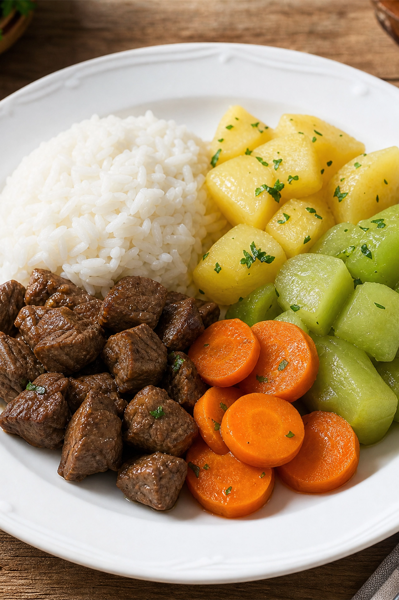

Luna
Menu preparado pelo Bistro
Personalizada
Informe ingredientes especiais e restrições para o Bistro completar com bases seguras.
O chef cria uma sugestão simples com nome da receita, ingredientes e modo de preparo.


Criado agora pelo Bistro
Delícia suave de frango com abóbora
Uma combinação macia e morna, criada para Luna a partir dos ingredientes que ela costuma gostar.
Ingredientes utilizados
- Frango
- Arroz
- Abóbora
Modo de preparo
Cozinhe separadamente até ficar macio.
Misture em textura delicada.
Sirva morno.